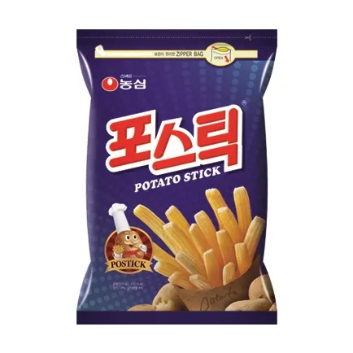
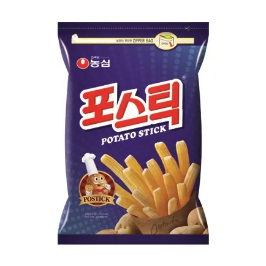

포스틱
농심에서 판매하는 과자. 감자튀김을 본뜬 스낵으로, 1980년부터 판매되었다. 출시 당시부터 제품 이름이 '포스틱'이었고 이후 '포테토스틱'이란 이름으로 판매되었다가 '포스틱'으로 되돌아왔다.
일반적인 프렌치 프라이보다는 굵고 크며, 바베큐향 시즈닝과 양파 시즈닝이 뿌려져 있어 살짝 짭짤한 맛과 감자 특유의 고소한 맛이 특징이다.
농심에서 판매하는 과자. 감자튀김을 본뜬 스낵으로, 1980년부터 판매되었다. 출시 당시부터 제품 이름이 '포스틱'이었고 이후 '포테토스틱'이란 이름으로 판매되었다가 '포스틱'으로 되돌아왔다.
일반적인 프렌치 프라이보다는 굵고 크며, 바베큐향 시즈닝과 양파 시즈닝이 뿌려져 있어 살짝 짭짤한 맛과 감자 특유의 고소한 맛이 특징이다.